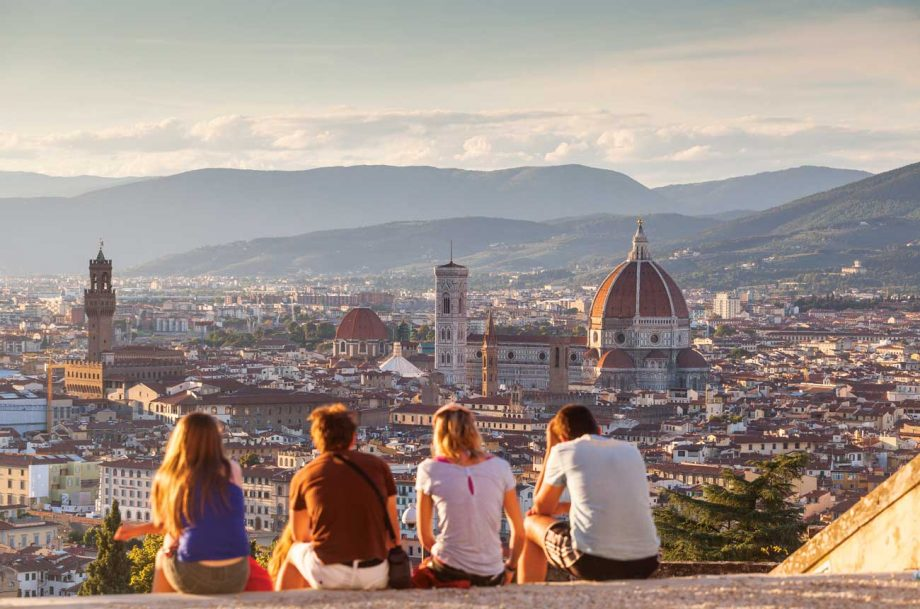

Florence, capitale de la région de la Toscane, centre touristique majeur avec une riche histoire, culture, art et architecture de la Renaissance.
Florence, capitale de la région de la Toscane, est l'une des villes d'art les plus importantes d'Italie et une référence historique et artistique mondiale.
Avec plus de 10 millions de touristes chaque année, c'est un centre touristique majeur grâce à sa riche histoire, culture, art et architecture de la Renaissance.
Patrimoine culturel exceptionnel
Le centre historique de Florence, inscrit au patrimoine mondial de l'UNESCO en 1982, symbolise le berceau de la Renaissance qui a eu une influence prépondérante sur le développement de l'architecture et des arts en Italie puis en Europe.
- On peut y visiter des trésors artistiques comme :
- Le Ponte Vecchio, le plus ancien pont de pierre d'Europe
- La cathédrale Santa Maria del Fiore avec sa coupole de Brunelleschi
- Le campanile de Giotto
- Les musées célèbres comme les Offices et l'Académie (David de Michel-Ange)
- Les basiliques Santa Croce, San Lorenzo, Santa Maria Novella
- Les palais Pitti et Vecchio
- Les places Signoria et Duomo

Rayonnement culturel et artistique
Florence a été le berceau de la Renaissance grâce à des mécènes comme les Médicis.
La ville foisonne de chefs-d'œuvre de Michel-Ange, Léonard de Vinci, Botticelli, Raphaël, Giotto, Donatello.
Son patrimoine culturel et historique exceptionnel en fait une destination majeure pour les amateurs d'art et de culture.
Flâner dans ses rues étroites et ses places emblématiques donne l'impression d'être dans un musée à ciel ouvert.
Ainsi, grâce à son riche passé, son architecture Renaissance et ses innombrables trésors artistiques, Florence attire chaque année des millions de visiteurs du monde entier, en quête de beauté, d'histoire et de culture.